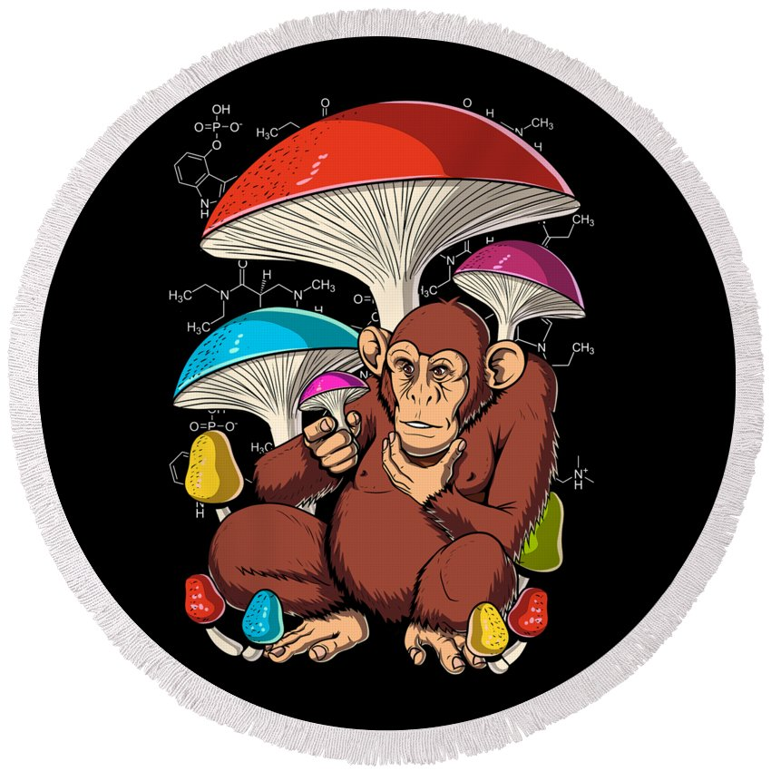

What Our Customers Say

Sara May
@sara_may
I just tried out @chirp and its amazing love all the analytics i can see.
♥
2
March 2, 2021

Jack Scott
@jack_scott
I initially started using Chirp to support the cofounder as I personally knew him, but after having tried it out for a few weeks, I can genuinely say this changed my Twitter game.
♥
3
March 2, 2021

Jessica May
@jmay98
Absolutely love everything about Chirp, from the design to know everything works smoothly.
♥
1
March 2, 2015